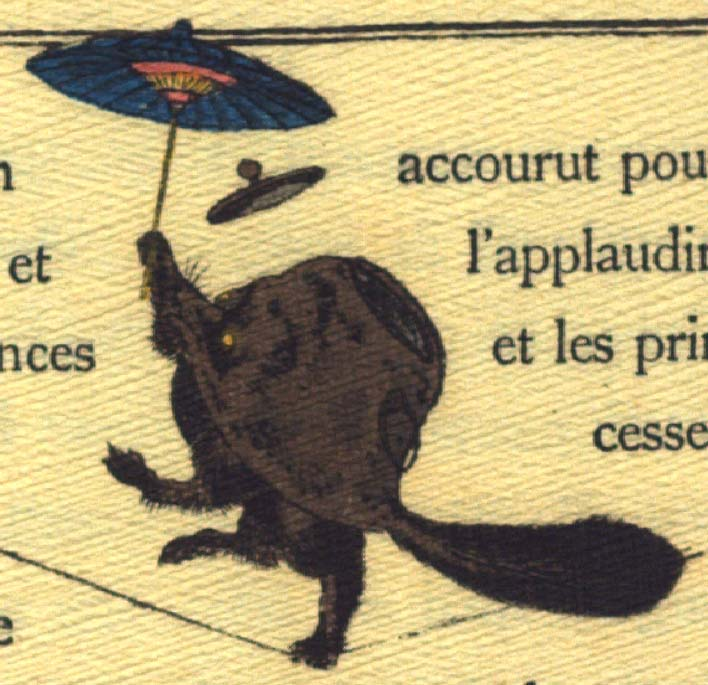

綱渡りをする文福茶釜。茶釜の正面中央がタヌキの顔になっている。突き出た鼻にひげが生えている。目は丸く、黄色い。茶釜の後方にふさふさとした尻尾が生えている。釜の下部は狸の下半身になっている。綱の上に後片脚で立っている。右前脚で開いた青い唐傘を差している。茶釜の上部が傾き、外れた蓋が飛んでいる。
著作者：Jules Adam／出典：親書誌：U426_nichibunken_0119：La bouillotte du bonheur／日付：2006／資源識別子：U426_nichibunken_0119_0007_0000
Copyright (c)2010- International Research Center for Japanese Studies, Kyoto, Japan. All rights reserved.